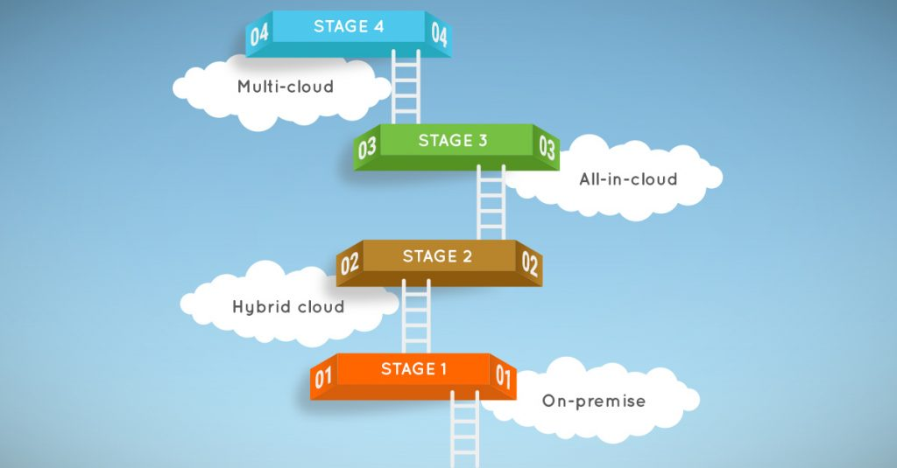

My Journey to the Cloud
My Journey through the AWS Cloud Resume Challenge.

Frontend Website Code: https://github.com/Saifulrubkhan/Saiful_CloudResumeWebsite Backend Serverless Code (Lambda + DynamoDB): https://github.com/Saifulrubkhan/cloud-resume-backendDevOps & Solutions Architect
Senior Site Reliability Engineer focused on AWS, platform engineering, automation, and secure cloud architecture.
Most of the time, learning tech feels like trying to put together a puzzle without seeing the picture on the box. You learn a bit of Python here or a bit of networking there, but you rarely get to see the whole "big picture" of how a single click on a browser travels across the globe to a database in some far-off data center.
That's exactly why I decided to tackle the AWS version of the Cloud Resume Challenge. Created by Forrest Brazeal, this isn't just another "follow-the-leader" tutorial; it's a total baptism by fire. It forced me to stop thinking about things in question and answer format and to actually create something that was long lasting and useful to me. While I did use the challenge steps as a rough guide, the steps I ended up taking were a bit different, but I feel I still ended up at the same destination. Anyways, this post is a map of that journey, from my first messy manual steps to a fully automated system I built myself.
The Project Roadmap
I've broken my documentation into five distinct phases. If you're looking for the "how-to" behind the high-level concepts, the links below will take you to my detailed, service-by-service breakdowns.- Phase 1: Building the Foundation (Aug 1)
Before I could even think about the cloud, I had to get my own house in order. This phase wasn't about complex automation yet; it was about getting comfortable with the tools of the trade. I spent this time learning how to navigate Visual Studio Code, moving away from basic text editors to a setup that actually felt professional. The real challenge here was a deep dive back into HTML and CSS. I had to relearn the building blocks of the web, experimenting with different designs and merging elements from various sites until I found a look that felt cohesive and, more importantly, felt like me.
Phase 1 Detailed Guide: VS Code Workflow - Phase 2: Going Live Globally (Aug 1 - Aug 4)
The goal here was simple: put my resume online. The execution, however, was a lesson in global networking. I used Amazon S3 to host the static files, but a bare bucket isn't secure or fast enough for a professional site. I then moved into the networking side of AWS, using Route 53 to manage my custom domain and wrapping the whole site in Amazon CloudFront. This wasn't just about speed; it was a deep dive into how HTTPS and SSL certificates actually work to keep a site secure.
Phase 2 Detailed Guides: AWS S3 Hosting | Route 53 Domain | CloudFront HTTPS - Phase 3: CI/CD & Cloud Hygiene (Aug 5 - Aug 9)
In the professional world, you don't manually upload files; you use a pipeline. I set up GitHub Actions so that every time I save my code, it automatically runs my tests and deploys itself to AWS. I also took a hard look at the "Cloud Hygiene" of my project-setting up AWS Budgets and monitoring to ensure my cloud journey didn't result in a surprise bill.
Phase 3 Detailed Guides: GitHub CI/CD | Cost Optimization - Phase 4: The Serverless Back-End & Integration (Aug 11 - Aug 15)
This is where the "magic" happens—and where the real frustration began. I needed a way to track visitors without running a traditional server. I built a serverless stack using DynamoDB and AWS Lambda (Python), connected to the world via the modern Amazon API Gateway HTTP API. This wasn't a "one and done" setup. I was testing and breaking things the whole time. I ended up moving away from the common "copy-paste" code I found in tutorials, rewriting my integration to be more secure and robust. Dealing with CORS (Cross Origin Resource Sharing) was a brutal lesson in web security, but it forced me to understand exactly how browsers and APIs communicate under the hood.
Phase 4 Detailed Guides: DynamoDB | Lambda | API Gateway - Phase 5 - Completing the Cloud Resume Challenge
The final phase of the Cloud Resume Challenge focused on building the backend services that turn a static website into a dynamic cloud application. During this stage I implemented a serverless visitor counter using AWS Lambda and DynamoDB, allowing the website to record and display page visits in real time. The frontend communicates with the backend through an HTTP API endpoint, which triggers the Lambda function and updates the database.
After completing the serverless backend, I transitioned the infrastructure into Terraform to move away from manual AWS console configuration. Instead of rebuilding the environment from scratch, I imported the existing resources into Terraform and aligned the configuration until Terraform reported no infrastructure changes. This ensured the live AWS environment matched the Infrastructure as Code configuration while keeping the site fully operational.
At this point, the core requirements of the AWS Cloud Resume Challenge were complete. The project now included static website hosting, global content delivery, automated deployments, serverless backend functionality, and Infrastructure as Code management.
Phase 5 Detailed Guide: The Terraform Migration -
Phase 6 - Extending the Project Beyond the Challenge
After completing the official challenge requirements, I began expanding the project with additional features to further develop my cloud engineering skills. Rather than simply stopping once the challenge was finished, this phase focuses on building new capabilities using the infrastructure already in place.
The first extension is a serverless email messaging feature integrated into the footer of the website. This will allow visitors to submit their name, email address, and a message directly through the site. When the form is submitted, the request will trigger a backend API endpoint, invoke an AWS Lambda function, and deliver the message to my email using AWS services.
Unlike earlier parts of the project that were initially created through the AWS console, this feature will be built entirely using Terraform from the start. This approach reinforces Infrastructure as Code practices and demonstrates how new services can be added to an existing cloud architecture in a repeatable and automated way.
High-Level Architecture
My architecture follows a standard “Serverless Three-Tier” pattern:The Edge Layer: When you visit khansaiful.com, Route 53 directs you to a CloudFront edge location. This ensures the site loads instantly, whether you're in New York or Tokyo.
The Logic Layer: As the page loads, JavaScript sends a request to the API Gateway (HTTP API). This triggers an AWS Lambda function—a piece of “serverless” Python code that wakes up just long enough to process the visit.
The Data Layer: The Lambda function talks to DynamoDB, retrieving and incrementing the visitor count before sending the number back to your screen.
Why This Project Matters
I wanted to move beyond abstract certifications. This project was my chance to prove that I can handle the actual friction of modern technology:Troubleshooting: I spent hours staring at “Access Denied” screens until I truly understood IAM policies.
Security: I followed the “Principle of Least Privilege,” ensuring my code only has the exact permissions it needs to run.
Modern Thinking: I opted for the HTTP API, proving I can evaluate technical trade-offs based on cost and performance rather than just following old tutorials.
Resilience: By using Terraform and CI/CD, I've ensured that my resume isn't just a static page—it's a living, automated piece of infrastructure.
Where I am now: I am currently in the thick of Phase'5, re-engineering this project to be “Infrastructure as Code” native. Follow along as I turn manual clicks into reproducible code.Skills
Technologies and tools I work with across the cloud, DevOps, and platform engineering stack:
Cloud & Infrastructure
CI/CD & DevOps
Containers & Orchestration
Infrastructure as Code
Monitoring & Logging
Databases & Servers
Version Control
Linux Distributions
Networking & Service Mesh
Security
Languages & Scripting
Virtualization
Certifications
AWS Certified Solutions Architect - Associate
Amazon Web Services
AWS Certified AI Practitioner
Amazon Web Services
Kubernetes and Cloud Native Associate (KCNA)
Cloud Native Computing Foundation
Cisco Certified Network Associate (CCNA)
Cisco